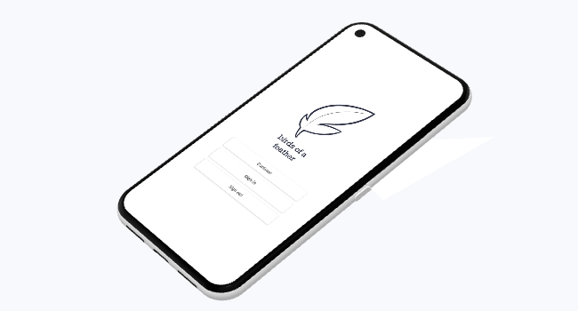

Birds of a Feather
Social networking for the classroom

Birds of a Feather is a local social networking app that connects students with other nearby students who they've shared classes with in the past. Students sign up, list out the classes they've previously taken, and then are matched with students who've taken the same professors and classes.
This app was developed in the wake of the pandemic as students slowly returned to campus, and it strove to bring people back together. I designed the UI in Android Studio and wrote the backend in Java.